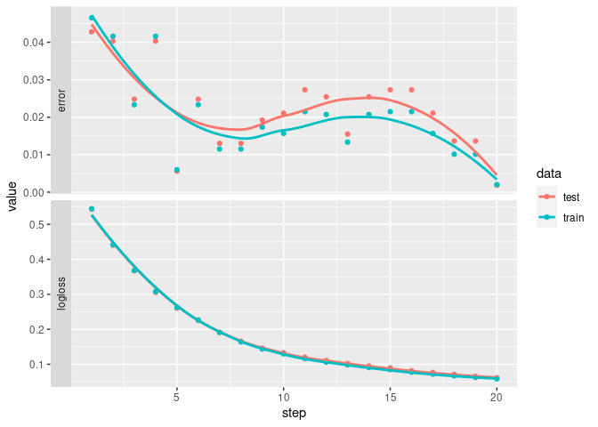

#| output-scalars:
#| - step: '\[(\step)]'
#| - '(\key):(\value)'
library(xgboost)
data(agaricus.train, package='xgboost')
data(agaricus.test, package='xgboost')
train <- agaricus.train
test <- agaricus.test
dtrain <- xgb.DMatrix(data = train$data, label=train$label)
dtest <- xgb.DMatrix(data = test$data, label=test$label)
watchlist <- list(train=dtrain, test=dtest)
nrounds = 20
eta = .2 # 1
bst <- xgb.train(
data = dtrain,
max.depth = 2,
eta = eta,
nthread = 2,
nrounds = nrounds,
watchlist = watchlist,
eval.metric = "error",
eval.metric = "logloss",
objective = "binary:logistic"
)
# save model to binary local file
xgb.save(bst, "xgboost.model")Here is an example showing how to use guildai with xgboost in R.
If this is your first exposure to guildai, we recommend starting with the framework agnostic “Getting Started” guide. This example assumes familiarity with guild concepts like flags and scalars.
We’ll start with an example R script, named “train-xgboost.R”, that trains, evaluates, and saves an xgboost model using the “agaricus” dataset. The script is adapted from the XGBoost R Tutorial. Here is what it looks like:
A few things to note about the script:
- There is no ‘guildai’ specific configuration in the script code.
It’s a regular R script, that you can safely
source()or work with interactively at the REPL. - We declare two custom
output-scalarspatterns in the scripts comment frontmatter. This informs guild how to parse the default xgboost stdout output and extract scalar values from it. - At the end of the run, we save the model to the current working directory. This file artifacts will be stored as part of the run, enabling us to later recover the trained model.
With our script defined, we can launch a guild run:
library(guildai)
guild_run("train-xgboost.R")
## > #| output-scalars:
## > #| - step: '\[(\step)]'
## > #| - '(\key):(\value)'
## >
## > library(xgboost)
## > data(agaricus.train, package='xgboost')
## > data(agaricus.test, package='xgboost')
## > train <- agaricus.train
## > test <- agaricus.test
## > dtrain <- xgb.DMatrix(data = train$data, label=train$label)
## > dtest <- xgb.DMatrix(data = test$data, label=test$label)
## > watchlist <- list(train=dtrain, test=dtest)
## > nrounds = 20
## > eta = .2 # 1
## > bst <- xgb.train(
## + data = dtrain,
## + max.depth = 2,
## + eta = eta,
## + nthread = 2,
## + nrounds = nrounds,
## + watchlist = watchlist,
## + eval.metric = "error",
## + eval.metric = "logloss",
## + objective = "binary:logistic"
## + )
## [1] train-error:0.046522 train-logloss:0.544737 test-error:0.042831 test-logloss:0.543282
## [2] train-error:0.041609 train-logloss:0.441820 test-error:0.040348 test-logloss:0.440453
## [3] train-error:0.023338 train-logloss:0.367894 test-error:0.024829 test-logloss:0.367593
## [4] train-error:0.041609 train-logloss:0.307582 test-error:0.040348 test-logloss:0.305584
## [5] train-error:0.005988 train-logloss:0.262504 test-error:0.005587 test-logloss:0.260576
## [6] train-error:0.023338 train-logloss:0.226496 test-error:0.024829 test-logloss:0.225653
## [7] train-error:0.011515 train-logloss:0.190894 test-error:0.013035 test-logloss:0.191412
## [8] train-error:0.011515 train-logloss:0.163972 test-error:0.013035 test-logloss:0.165692
## [9] train-error:0.017350 train-logloss:0.143502 test-error:0.019243 test-logloss:0.146280
## [10] train-error:0.015661 train-logloss:0.129690 test-error:0.021105 test-logloss:0.132982
## [11] train-error:0.021495 train-logloss:0.116178 test-error:0.027312 test-logloss:0.120329
## [12] train-error:0.020728 train-logloss:0.105877 test-error:0.025450 test-logloss:0.110788
## [13] train-error:0.013358 train-logloss:0.097936 test-error:0.015518 test-logloss:0.102105
## [14] train-error:0.020728 train-logloss:0.090436 test-error:0.025450 test-logloss:0.095189
## [15] train-error:0.021495 train-logloss:0.084507 test-error:0.027312 test-logloss:0.089555
## [16] train-error:0.021495 train-logloss:0.077198 test-error:0.027312 test-logloss:0.081516
## [17] train-error:0.015661 train-logloss:0.071895 test-error:0.021105 test-logloss:0.076497
## [18] train-error:0.010134 train-logloss:0.066899 test-error:0.013656 test-logloss:0.071019
## [19] train-error:0.010134 train-logloss:0.062276 test-error:0.013656 test-logloss:0.065473
## [20] train-error:0.001996 train-logloss:0.058151 test-error:0.001862 test-logloss:0.061222
## > # save model to binary local file
## > xgb.save(bst, "xgboost.model")
## [1] TRUEInspecting the run flags and scalars:
run <- runs_info(1)
str(run$flags)
## tibble [1 × 2] (S3: tbl_df/tbl/data.frame)
## $ eta : num 0.2
## $ nrounds: num 20
str(run$scalars)
## tibble [1 × 4] (S3: tbl_df/tbl/data.frame)
## $ test-error : num 0.00186
## $ test-logloss : num 0.0612
## $ train-error : num 0.002
## $ train-logloss: num 0.0582runs_info() returns the last value for each scalar. The
full history of scalars emitted is available with
runs_scalars().
scalars <- runs_scalars(1)
scalars
## # A tibble: 80 × 5
## run path tag value step
## <chr> <chr> <chr> <dbl> <dbl>
## 1 3d5df8a345364a319ba95509cb798adc <NA> test-error 0.0428 1
## 2 3d5df8a345364a319ba95509cb798adc <NA> test-logloss 0.543 1
## 3 3d5df8a345364a319ba95509cb798adc <NA> train-error 0.0465 1
## 4 3d5df8a345364a319ba95509cb798adc <NA> train-logloss 0.545 1
## 5 3d5df8a345364a319ba95509cb798adc <NA> test-error 0.0403 2
## 6 3d5df8a345364a319ba95509cb798adc <NA> test-logloss 0.440 2
## 7 3d5df8a345364a319ba95509cb798adc <NA> train-error 0.0416 2
## 8 3d5df8a345364a319ba95509cb798adc <NA> train-logloss 0.442 2
## 9 3d5df8a345364a319ba95509cb798adc <NA> test-error 0.0248 3
## 10 3d5df8a345364a319ba95509cb798adc <NA> test-logloss 0.368 3
## # … with 70 more rows
library(dplyr)
library(tidyr)
library(ggplot2)
scalars %>%
select(-path) %>%
tidyr::separate(tag, c("data", "metric")) %>%
ggplot(aes(x = step, y = value, color = data)) +
facet_grid(rows = vars(metric), switch = 'y', scales = 'free_y') +
geom_point() + geom_smooth(se = FALSE)
Finally, we can load the model trained during the run by accessing
the saved file from the run$dir.
model <- xgboost::xgb.load(file.path(run$dir, "xgboost.model"))
model
## ##### xgb.Booster
## raw: 21.2 Kb
## xgb.attributes:
## niter
## niter: 19